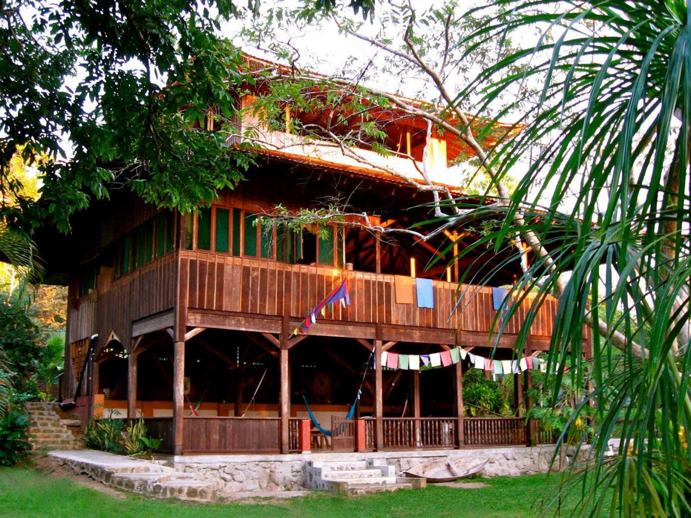
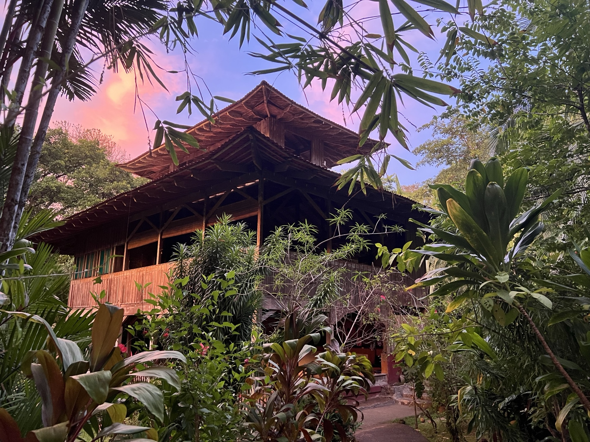
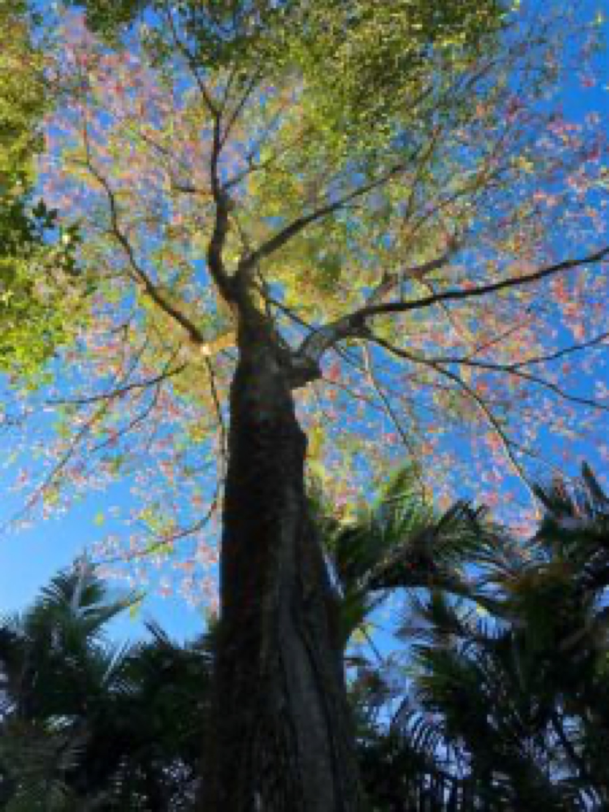
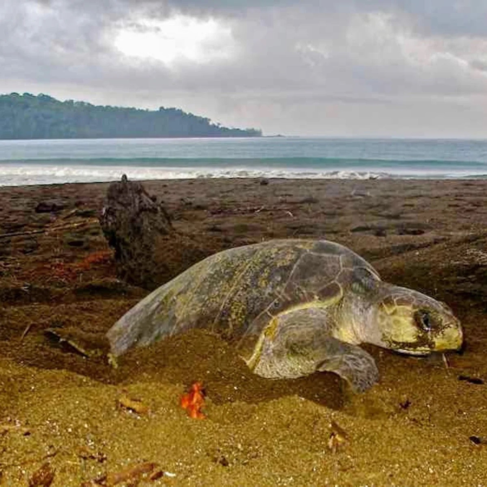
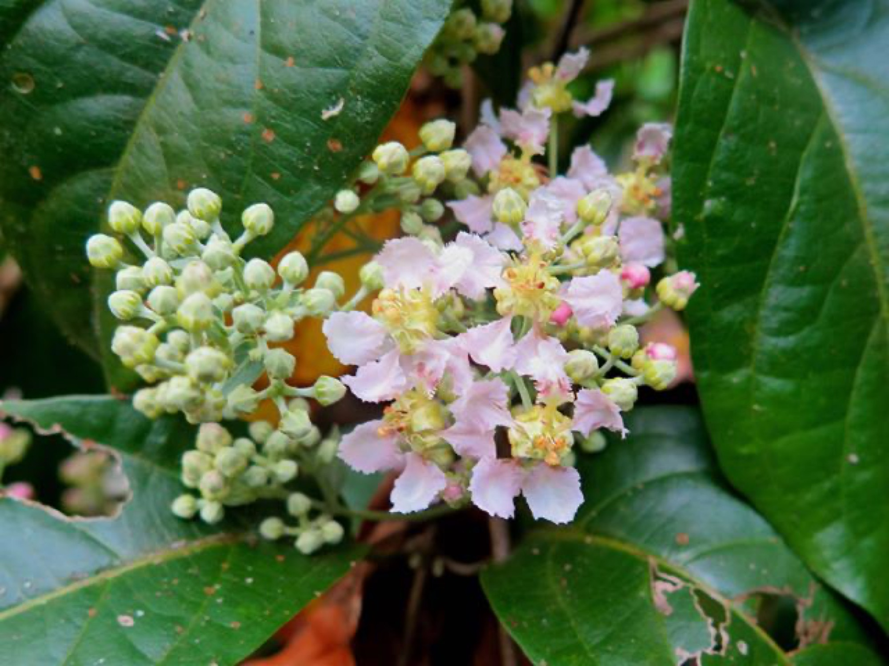

Marine
Marine turtle patrols
Sixteen consecutive years, in partnership with Fundación Corcovado and Fundación Osa. Olive ridley, Pacific green and (rarely) hawksbill turtles all nest on the beach in front of the lodge.

We built the lodge so that the work could exist. Sixteen years of marine turtle patrols, a fifteen-acre ethnobotanical garden, an off-grid property — all of it held together by guests who come to rest, and a community that comes back each season.
We came to this beach a long time ago, looking for a way to live in close relationship to a rainforest that did not need us. The peninsula was already changing — too many roads being cut, too many fences going up, too many old neighbours quietly leaving. We thought: if we could build something small here, and run it gently, we could pay for the work the forest needs us to do.
That's still the answer to most questions about the lodge. Why ten rooms and not forty? Because thirty guests is the limit of what this beach can support without changing. Why no road? Because the road would change everything. Why three meals a day from the garden? Because we'd rather grow the food than ship it.
We are a small team. Most of us live here year-round, on the property or in the village next door. Twenty-three of our twenty-five staff are from Drake Bay, Agujitas or the surrounding hills. The lodge is run on solar power, the water comes from a mountain spring on the back of the land, and the food is mostly grown a hundred metres from your fork. None of this is unusual any more. It's just how we built it.
A portion of every reservation goes directly into one of three year-round programmes. They are the slow, accumulating work that keeps this corner of the Osa intact.
Sixteen consecutive years, in partnership with Fundación Corcovado and Fundación Osa. Olive ridley, Pacific green and (rarely) hawksbill turtles all nest on the beach in front of the lodge.

Fifteen acres above the lodge, curated with the Universidad de Costa Rica. Three hundred and fifty species of fruit, medicine, herb and tree from across the tropical Americas and Asia.

We work with the Asociación de Productores de Drake to maintain forest cover on neighbouring smallholdings, and run a year-round environmental literacy programme in the village schools.
Every nesting season, our team walks a 1.6-kilometre stretch of San Josecito Beach by night, looking for the broken-bicycle track that means a female turtle has come ashore. We relocate vulnerable nests to a protected hatchery, monitor temperatures, and release hatchlings at dawn.
The data we collect feeds national monitoring and international IUCN reporting. We've grown the hatchery slowly over sixteen consecutive years, and we run it under permit from Costa Rica's Ministerio de Ambiente y Energía. Guests are welcome to join a patrol or release in season — write to us.
Join a patrol
Sixteen consecutive nesting seasons walking 1.6 km of San Josecito Beach by night, in partnership with Fundación Corcovado and Fundación Osa.
Vulnerable nests moved from the open beach to our protected hatchery, where we monitor sand temperature until they hatch.
Baby turtles returned to the ocean at dawn. The data we collect feeds national monitoring and international IUCN reporting.
Olive ridley, Pacific green, and — rarely — hawksbill turtles all nest on the beach in front of the lodge.

Fifteen acres on the rise above the lodge, planted plant by plant. Cacao trees, fruit orchards, aromatic herbs, medicinal bitters, adaptogens, vanilla orchids climbing the older guapinols. Many of the cuttings came from elders across Mesoamerica.
A daily naturalist walk is open to every guest. We do it at 9:30am and it ends with a tasting in the kitchen.
Botanical retreatsSolar array and a small upstream micro-hydro turbine. No public-grid electron since we opened.
Gravity-fed from a protected spring on the back of the property. Rainwater for the gardens.
Every structure is reclaimed hardwood, bamboo and river stone. No old-growth tree was felled.
Refillable water stations, refillable amenities, compostable kitchen, worm farm for the rest.
About seventy percent grown on-property; the rest from neighbour farms within ten kilometres.
Twenty-three of twenty-five team members come from Drake Bay, Agujitas or the surrounding hills.